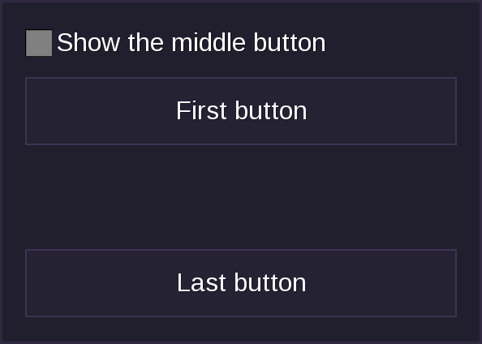

Hiding Elements
Elements inside boxes can have visible = false set to hide them from the player.
Hidden elements keep their space
Elements hidden this way will still take up space like with visibility: hidden; in CSS. To remove the space as well, see Alternatives.
Example
Untick the checkbox to hide the middle button: it disappears, but the gap it leaves stays.
local form = flow.make_gui(function(player, ctx)
return gui.VBox {
gui.Checkbox { name = "show", label = "Show the middle button", selected = true },
gui.Button { label = "First button" },
gui.Button { label = "Middle button", visible = ctx.form.show ~= false },
gui.Button { label = "Last button" },
}
end)

Where It Works
visible = falseworks on elements insidegui.HBox,gui.VBox,gui.Stack,gui.ScrollableVBox, andgui.PaginatedVBox. In agui.Stack, the hidden element still counts towards the size of the stack.- It does nothing on elements placed directly inside a
gui.Containerorgui.ScrollContainer(the ones you position yourself withxandy): they are still drawn. See Manual Positioning. - It does nothing on the root element of the form (see Terms Used in This Documentation), which is always shown.
What Happens to Hidden Elements
Flow takes a hidden element out of the form after it has worked out the layout, and before it handles anything else. The player's client never receives it, so:
- A hidden button cannot be clicked or focused, and its
on_eventfunction is never called. The same goes for every other hidden element. - Its
styleandtooltipare not sent either. - A hidden input with a
nameis not registered, so flow does not set or updatectx.form[name](see Names and Values) while it is hidden. A value that is already inctx.formis kept and is applied again when the element is shown.
Type something in the field of this example, then untick the checkbox. The field disappears, but the label still shows what you typed, and the text is back in the field when you tick the checkbox again:
local form = flow.make_gui(function(player, ctx)
return gui.VBox {
gui.Checkbox { name = "show_note", label = "Show the note field", selected = true },
gui.Field { name = "note", label = "Note", visible = ctx.form.show_note ~= false },
gui.Label { label = "Stored note: " .. (ctx.form.note or "") },
}
end)
While the field is hidden, flow ignores a note value sent by the client, because the field is not registered, see What Flow Checks.
Alternatives
If you don't want hidden elements to take up any space, see the documentation for gui.Nil. gui.Nil is an invisible element (a tooltip) that is hidden with visible = false, so it is skipped when the layout is worked out. See Invisible Elements for the others. An invisible element that is itself given visible = false is removed from the form in the same way, it just never had a size.